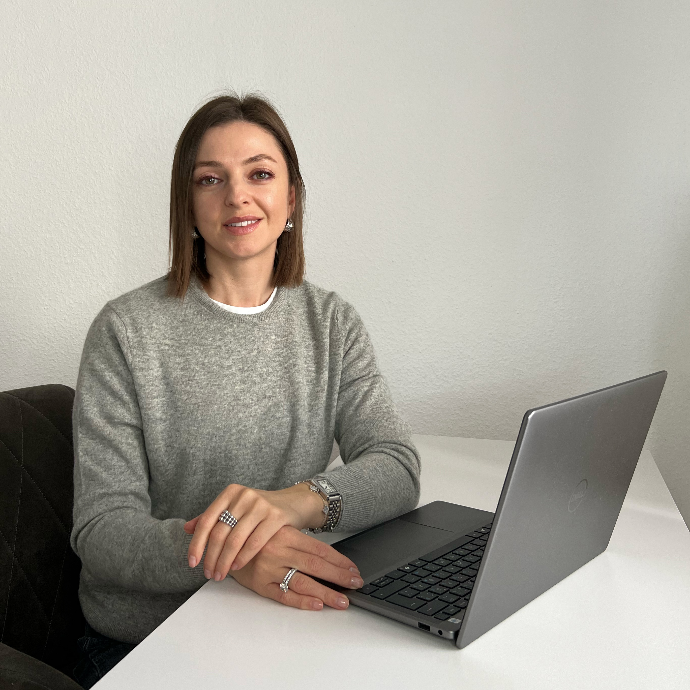

Slawische Herkunftssprachen
Wie entwickeln und verändern sich slawische Herkunftssprachen in mehrsprachigen Kontexten? Ich untersuche Sprachgebrauch, sprachliche Strukturen und die Bedingungen von Mehrsprachigkeit.
Slawistische Sprachwissenschaft · Universität Jena
Sprache verstehen.
Mehrsprachigkeit erforschen.
Ich erforsche slawische Sprachen als Herkunftssprachen und ihre Entwicklung in mehrsprachigen Kontexten. Dabei interessieren mich sprachliche Strukturen, Bedeutungen und Sprachgebrauch ebenso wie ihre gesellschaftlichen Zusammenhänge.

01 / Forschung
Wie entwickeln und verändern sich slawische Herkunftssprachen in mehrsprachigen Kontexten? Ich untersuche Sprachgebrauch, sprachliche Strukturen und die Bedingungen von Mehrsprachigkeit.
Wortschatz, sprachliche Bedeutung und Sprachgebrauch im Kontext bilden weitere Schwerpunkte meiner Forschung und Lehre. In meiner Dissertation untersuche ich insbesondere die lexikalische Kategorisierung im Herkunftsrussischen.
Sprachliche, nationale und kulturelle Identität verändern sich über Generationen. Meine Arbeiten betrachten diese Zusammenhänge in russischsprachigen Familien in Deutschland.
02 / Publikationen
In E. Protassova (Hrsg.), Mnogoyazychie i kul’tura [Mehrsprachigkeit und Kultur], S. 78–100. Retorika A. Beitrag auf Russisch.
Blacher, O., Kurbangulova, T., & Poletaev, C. (2026). Mezhpokolencheskaya transformatsiya yazykovoy, natsional’noy i kul’turnoy identichnosti russkoyazychnykh semey v Germanii. In E. Protassova (Hrsg.), Mnogoyazychie i kul’tura (S. 78–100). Retorika A.
Languages, 9(10), 320.
Blacher, O., & Brehmer, B. (2024). Influence of Family Language Policies on Language Proficiency across Generations: A Study of Russian-Speaking Families in Germany. Languages, 9(10), 320. https://doi.org/10.3390/languages9100320
In O. Kisselev, O. Laleko & I. Dubinina (Hrsg.), Russian as a Heritage Language: From Research to Classroom Applications, S. 72–98. Routledge.
Blacher, O., & Brehmer, B. (2024). Forms of Address in Heritage Russian in Germany: Something to Address in the Classroom. In O. Kisselev, O. Laleko & I. Dubinina (Hrsg.), Russian as a Heritage Language: From Research to Classroom Applications (S. 72–98). Routledge.
In Mnogoyazychie i prepodavanie [Mehrsprachigkeit und Unterricht], S. 109–122. Riga: Retorika A. Beitrag auf Russisch.
Kurbangulova, T., Brehmer, B., Blacher, O., Poletaev, C., & Tenyaeva, A. (2024). O koni, konyov i koney – ispol’zovanie padezhey russkoyazychnymi eritazhnikami v Germanii. In P. Gelfreikh, M. Niznik, E. Protassova & A. Fedorincik (Hrsg.), Mnogoyazychie i prepodavanie (S. 109–122). Riga: Retorika A.
03 / Lehre & Austausch
Seminar an der Universität Jena zu sprachlicher Bedeutung und Kommunikation im Kontext. Die Konzepte werden anhand übersetzter Beispiele aus slawischen Sprachen erläutert.
Zum Seminar in FriedolinSeminar an der Friedrich-Schiller-Universität Jena und Betreuung von Hausarbeiten.
Zum Seminar in FriedolinVon 2015 bis 2020: Lehre in Russisch sowie Deutsch als Zweitsprache an der Universität Jena und beim Thüringer Volkshochschulverband.
Poster · KI-Tag der Philosophischen Fakultät · Universität Jena · 13. November 2026
Poster ansehen (PDF)Olia Blacher & Ruprecht von Waldenfels
15. Deutscher Slavistiktag · Universität Jena · 1. Oktober 2026
Zum Tagungsprogramm (PDF)Vortrag · Bilingualism and Intercultural Dialogue · Parma/Mailand · 21.–23. März 2024
Vortragsfolien (PDF)Вариативность в глагольном управлении среди русско-немецких билингвов в межпоколенческом сравнении
Olia Blacher, Bernhard Brehmer, Tatjana Kurbangulova, Chingiz Poletaev & Anastasiia Teniaeva
Poster · RUEG Conference „Linguistic Variability in Heritage Language Research“ · Humboldt-Universität zu Berlin
Poster ansehen (PDF)Olia Blacher, Bernhard Brehmer, Tatjana Kurbangulova, Chingiz Poletaev & Anastasiia Teniaeva
Vortrag · 14th International Symposium on Bilingualism · Sydney · 26.–30. Juni 2023
Vortragsfolien (PDF)Bernhard Brehmer, Olia Blacher & Tatjana Kurbangulova
Vortrag · GAL-Jahrestagung 2022 · Würzburg · 28.–30. September 2022
Vortragsfolien (PDF)Olia Blacher, Tatjana Kurbangulova & Bernhard Brehmer
Poster · 4th ISBPAC · Tromsø
Poster ansehen (PDF)Olia Blacher & Bernhard Brehmer
04 / Wissenschaftsorganisation & Drittmittel
Ich war Organisatorin des 15. Deutschen Slavistiktags an der Universität Jena vom 30. September bis 3. Oktober 2026 und habe einen eigenen wissenschaftlichen Vortrag beigetragen.
Zur TagungIch organisiere den Data Science Day Jena und werbe dafür jährlich Drittmittel bei der Gerlind & Ernst Denert Stiftung ein.
Zum Data Science Day 2026Im Rahmen des Projekts Interactive Inference organisiere ich wissenschaftliche Workshops und unterstütze den Austausch zwischen den beteiligten Fachrichtungen.
Zu den Projektveranstaltungen05 / Werdegang
Institut für Slawistik und Kaukasusstudien
Bereich Slawistische Sprachwissenschaft
Friedrich-Schiller-Universität Jena
Fakultät für Mathematik und Informatik
Lehrstuhl Theoretische Informatik II
Friedrich-Schiller-Universität Jena
Gefördert durch die Carl-Zeiss-Stiftung
DFG-Projekt Russian in Germany across Generations
AG Slavistische Linguistik, Universität Konstanz
Projekt Digital Flipped Classroom
Lehrstuhl für Sozialpsychologie, Universität Jena
Philosophische Fakultät, Universität Jena
Universität Jena
Anredeformen bei russischsprachigen Migranten in Deutschland.
Universität Jena
Altajer Staatliche Schukschin-Akademie für Bildung, Bijsk
Abschluss mit Auszeichnung
Internationaler Austausch
Pavia
Coimbra
Krakau
Helsinki
06 / Kontakt
Für wissenschaftlichen Austausch, Fragen zu meiner Forschung, zur Lehre oder zur Organisation von Veranstaltungen erreichen Sie mich per E-Mail.
olia.blacher@uni-jena.deFriedrich-Schiller-Universität Jena
Professur für Slawistische Sprachwissenschaft
Institut für Slawistik und Kaukasusstudien, Universität Jena
Projekt Interactive Inference
Institut für Informatik, Universität Jena
Fakultät für Mathematik und Informatik
Lehrstuhl Theoretische Informatik II